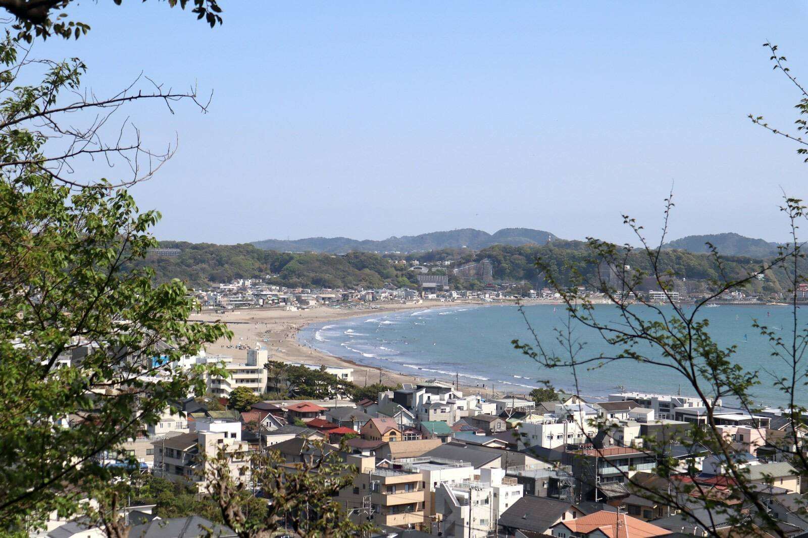
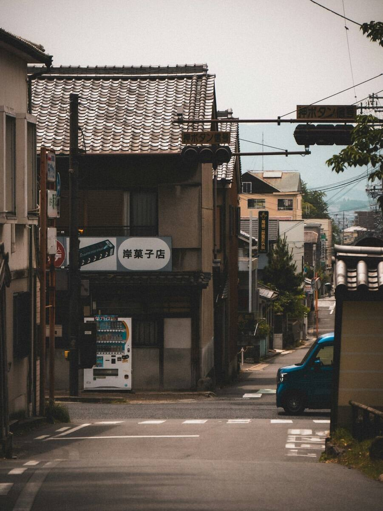
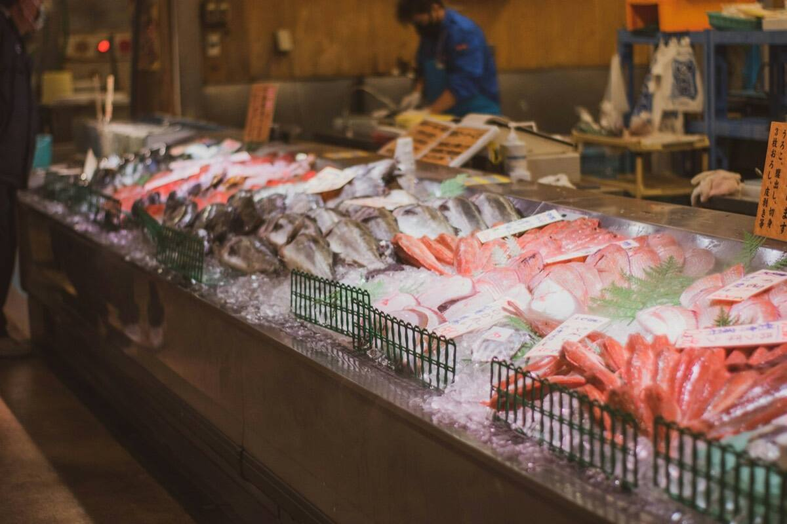
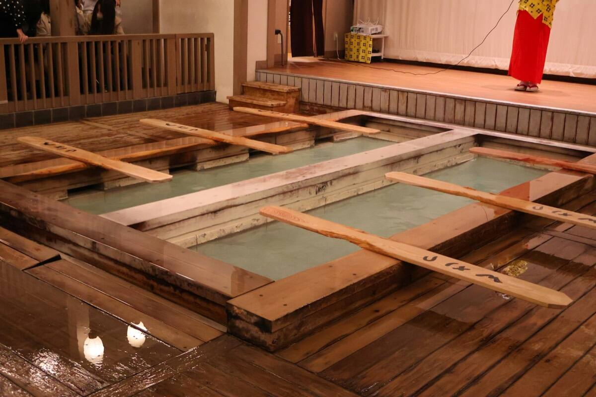
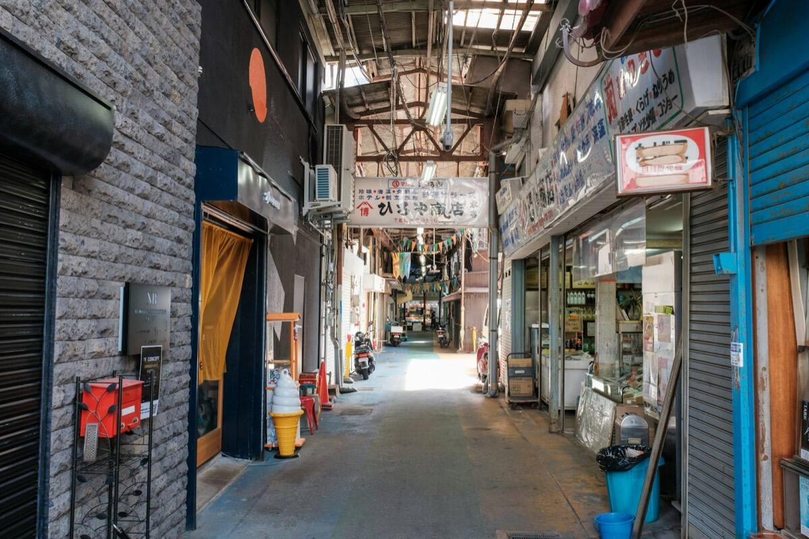
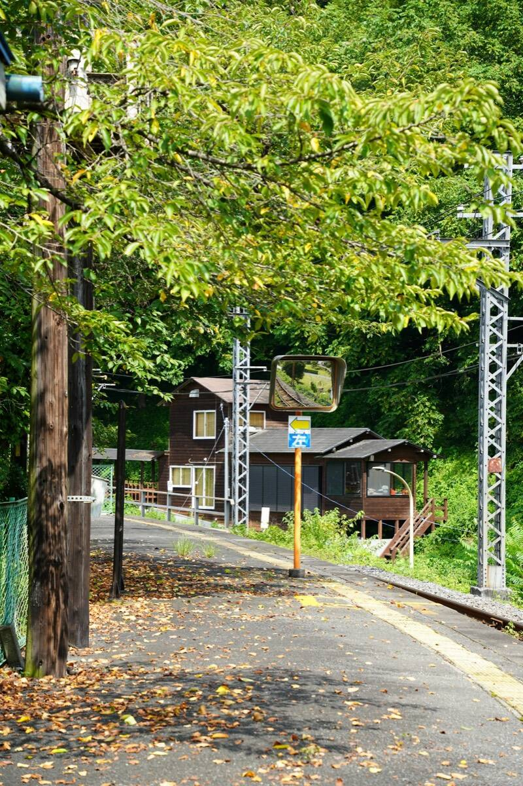

先從鄰國的故事，
聊起吧。
搶先登記的朋友，將在旅程準備就緒時，第一時間收到通知。
登記完全免費。目前尚未開放旅遊商品的販售與預約。實際的旅遊安排，預計由合作旅行社負責。

※照片僅供示意台灣 日本 搶先登記中
熱門城市都去過了嗎？下一趟日本，就從觀光景點再往前一步——當地人的日常開始。となり旅（TONARI TABI）是 NW 連結台灣與日本的全新旅行品牌。
免費登記。準備就緒後，將透過 LINE 通知您。

關於となり旅
知名景點當然很棒。但旅行結束後還留在心裡的，往往是清晨市場的吆喝聲、澡堂裡的熱氣，或是商店街慢慢流過的午後。
「となり」是日文的「隔壁、鄰居」。となり旅以與旅行社合作為前提，正在籌備讓您走進當地人「平常的日本」的旅程。
還不知道的日常
となり旅想帶您遇見的，是這樣的日常風景。想去的地方、想體驗的事，歡迎在搶先登記的問卷中告訴我們。

在清晨的攤位間，和當地人一起挑選當季的魚貨。

泡進街坊的澡堂，感受一天結束時的放鬆。

買個點心邊走邊逛，老街坊的慢午後。

在鄉間小站下車，走進沒有人潮的小鎮。
※ 照片僅供示意。包含上述情境的旅遊商品目前正在籌備中。
推薦給這樣的您
熱門城市都去過了？一起找找下一個想去的地方。
從孩子到長輩，一起規劃大家都能輕鬆享受的行程。
以悠閒的步調，減少移動的負擔。任何疑問都歡迎事先諮詢。
諮詢流程
點選下方按鈕，加入 NW 官方 LINE 帳號。
告訴我們想出發的時間，以及想在日本體驗的事。大約 1 分鐘就能完成。
旅程準備好後，將透過 LINE 通知您。個別諮詢也可以透過 LINE 聯繫。
搶先登記的朋友，將在旅程準備就緒時，第一時間收到通知。
登記完全免費。目前尚未開放旅遊商品的販售與預約。實際的旅遊安排，預計由合作旅行社負責。